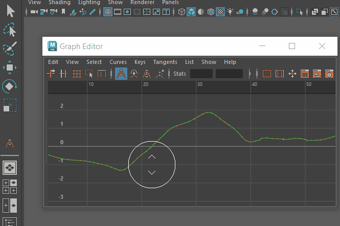
通过双击“工具箱”(Tool Box)的“上次使用的工具”(Last Used Tool)区域，打开“曲线图编辑器”(Graph Editor)的曲线雕刻工具设置
本主题介绍了“抓取”(Grab)、“平滑”(Smooth)、“涂抹”(Smear)和“关键帧减少器”(Key Reducer)曲线雕刻工具设置。有关如何使用曲线雕刻工具的信息，请参见使用曲线图编辑器曲线雕刻工具雕刻曲线。
使用“抓取”(Grab)、“平滑”(Smooth)和“涂抹”(Smear)工具设置调整衰减曲线。“关键帧减少器”(Key Reducer) 没有衰减曲线。
若要访问这些设置，请在“曲线图编辑器”(Graph Editor)的“抓取”(Grab)、“平滑”(Smooth)或“涂抹”(Smear)处于活动状态时，执行以下操作之一：
- 在状态行右侧，单击侧栏图标中的工具设置(Tool Settings)图标 。
- 双击工具箱的“上次使用的工具”(Last Used Tool)区域中的“抓取”(Grab) 、“平滑”(Smooth) 、“涂抹”(Smear) 或“关键帧减少器”(Key Reducer) 工具图标。
- 选择(Windows > General Editors > Tool Settings)。（“抓取”(Grab)和“平滑”(Smooth)曲线工具具有相同设置）
注： “曲线图编辑器”(Graph Editor)中的“平滑”(Smooth)和“涂抹”(Smear)雕刻工具均不遵循值捕捉。
- “笔刷”(Brush)设置
- 使用这些设置可自定义笔刷。在下面的“光笔”(Stylus)设置中，为笔设置基线最小大小和强度。
-
- 大小(Size)
- 设置工具的半径。
- 移动滑块以定义笔刷光标的半径。默认设置为 15。热键：使用鼠标中键向左或向右拖动。按住 Ctrl 键并使用鼠标中键拖动可从零开始更改笔刷半径。
- 强度(Strength)
- 确定工具影响曲面的程度。根据工具的不同，此值表示可用最大强度的百分比或者用世界空间单位表示的高度。
- 移动滑块以设置笔刷影响关键帧的方式。默认设置为 100，即完全。热键：使用鼠标中键向上或向下拖动。按住 Ctrl 键并使用鼠标中键拖动可从零开始更改笔刷强度
-
 影响时间(Affects Time)
影响时间(Affects Time)
-
注： 仅适用于“抓取”(Grab)和“涂抹”(Smear)曲线雕刻工具。
- 激活此选项可在“曲线图编辑器”(Graph Editor)的“值”(Value)轴和“时间”(Time)轴上雕刻曲线。雕刻笔刷光标会更改以反映您处于“值”(Value)模式还是“值”(Value)和“时间”(Time)模式。
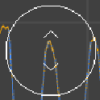
 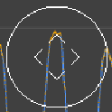
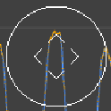左：仅“值”(Value)模式（默认）下的光标。右：“值”(Value)和“时间”(Time)模式下的光标。
-
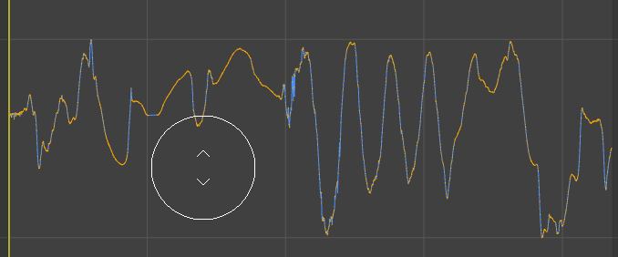
“影响时间”(Affects Time)处于活动状态时的“抓取”(Grab)曲线雕刻工具
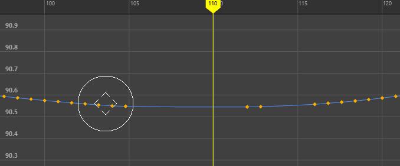“影响时间”(Affects Time)处于活动状态时的“涂抹”(Smear)曲线雕刻工具
- “衰减”(Falloff)设置
- 使用“衰减”(Falloff)曲线可设置笔刷光标强度的淡入度。可以从预设中进行选择，或拖动曲线以重塑其形状。这些设置类似于雕刻“衰减”(Falloff)工具，但此工具影响“曲线图编辑器”(Graph Editor)图表视图中的关键帧。
- 有关使用“衰减”(Falloff)曲线的信息，请参见调整工具衰减。
注： “曲线图编辑器”(Graph Editor)的“关键帧减少器”(Key Reducer) 雕刻工具不使用衰减曲线。
- “光笔”(Stylus)设置
- 通过此区域可以指定最小笔刷大小和强度。
注： 在 MacOS 上，如果取消停靠“曲线图编辑器”(Graph Editor)，笔刷光标会消失，要恢复光标，请关闭并重新打开“曲线图编辑器”(Graph Editor)。
| 目标 | 操作 |
|---|---|
| 选择要雕刻的关键帧 | 拖动时，关键帧必须在雕刻工具笔刷的半径范围内，因为只有笔刷圈内的关键帧会更改（除非关键帧或通道已锁定）。笔刷半径外的关键帧不受影响。
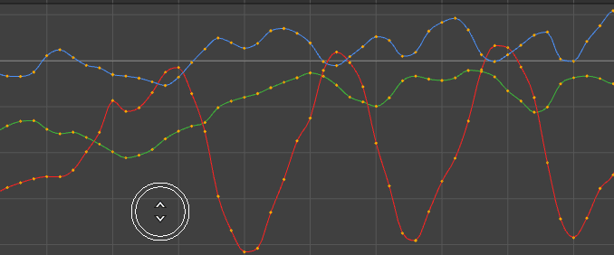
|
| 在图表视图中向上或向下推动关键帧 | 从“曲线图编辑器”(Graph Editor)工具栏中选择“抓取”(Grab)工具 。您还可以在“曲线图编辑器”(Graph Editor)的(Edit > Sculpting Tools)菜单中找到“抓取”(Grab)工具。
 |
| 在图表视图中展平曲线上的关键帧 | 从“曲线图编辑器”(Graph Editor)工具栏中选择“平滑”(Smooth)工具 ，然后在要影响的曲线上拖动。您还可以在“曲线图编辑器”(Graph Editor)的菜单中找到“平滑”(Smooth)工具。
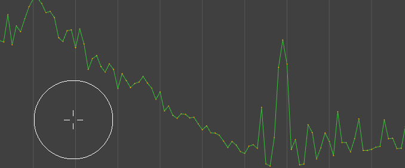
|
| 在图表视图中扩散曲线上的关键帧 | 从“曲线图编辑器”(Graph Editor)工具栏中选择“涂抹”(Smear)工具 ，然后在要影响的曲线上拖动。您还可以在“曲线图编辑器”(Graph Editor)的(Edit > Sculpting Tools)菜单中找到“涂抹”(Smear)工具。
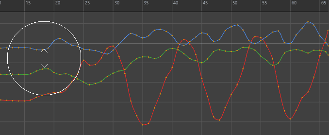
|
| 减少关键帧密集的曲线上的关键帧 | 从“曲线图编辑器”(Graph Editor)工具栏中选择“关键帧减少器”(Key Reducer)工具 ，然后在要减少关键帧的曲线上拖动。您还可以在“曲线图编辑器”(Graph Editor)的“”(Edit > Sculpting Tools)菜单中找到“关键帧减少器”(Key Reducer)工具。
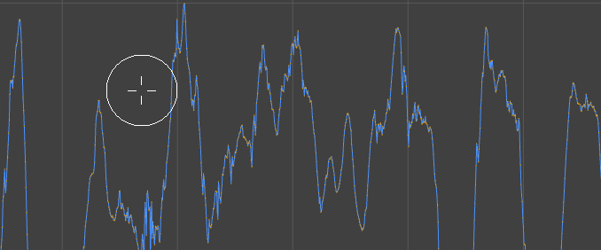
注： “关键帧减少器”(Key Reducer)雕刻工具不适用于四元数旋转曲线。
|
| 调整任何雕刻工具的大小 | 使用鼠标中键向左或向右拖动任何关键帧雕刻工具以对其进行缩放。
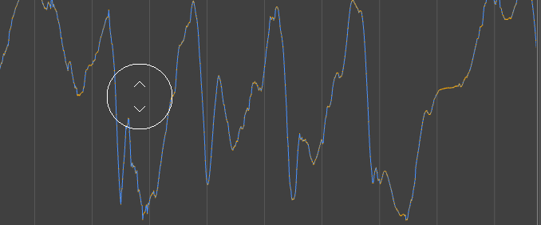
|
| 更改雕刻工具的强度 | 使用鼠标中键向上或向下拖动任何关键帧雕刻工具，以显示可拖动的强度级别指示器。
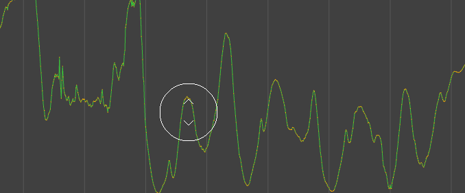
|
| 在工具之间切换 | 按 Shift 键可在下列工具之间切换
注： 若要在工具之间切换时调整“平滑”(Smooth)工具的半径或强度，请在按住 Shift 键的同时使用鼠标中键拖动。
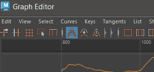
|